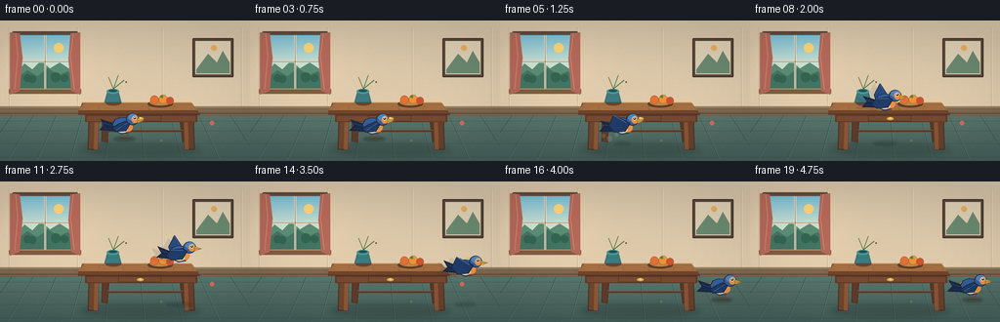
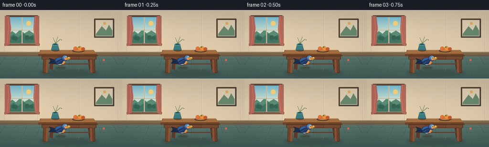
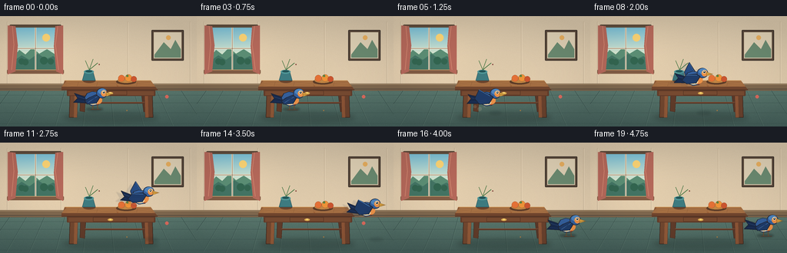
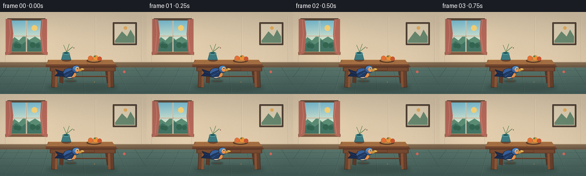

CODING AGENTS AS PIXEL WORLD MODELS
traex/DeepSeek-V4.1-Flash · dynamic_spatial_relationship_0042
点击播放 · 原生 RGB 像素
逐轮保存的候选
回放视频、检查图与代码变化。
每份候选均可单独播放。实际图片检查记录在下方工具轨迹中。
候选 01播放与检查图
点击播放 · 原生 RGB 像素


展开代码变化
--- 上一保存版本
+++ 本次保存版本
@@ -0,0 +1,440 @@
+from __future__ import annotations
+
+import math
+from pathlib import Path
+
+import numpy as np
+from PIL import Image, ImageDraw, ImageFilter
+
+import artifact_io
+
+
+W, H = 256, 144
+N_FRAMES = 20
+SCALE = 4
+
+
+def mix(a, b, t):
+ return tuple(round(a[i] * (1.0 - t) + b[i] * t) for i in range(3))
+
+
+def lerp_point(a, b, t):
+ return (a[0] * (1.0 - t) + b[0] * t, a[1] * (1.0 - t) + b[1] * t)
+
+
+def smoothstep(t):
+ t = max(0.0, min(1.0, t))
+ return t * t * (3.0 - 2.0 * t)
+
+
+def eased(t):
+ t = max(0.0, min(1.0, t))
+ return t * t * t * (t * (t * 6.0 - 15.0) + 10.0)
+
+
+def P(points):
+ return [(round(x * SCALE), round(y * SCALE)) for x, y in points]
+
+
+def ellipse(draw, box, fill, outline=None, width=1):
+ draw.ellipse(tuple(round(v * SCALE) for v in box), fill=fill, outline=outline,
+ width=max(1, round(width * SCALE)))
+
+
+def line(draw, points, fill, width=1):
+ draw.line(P(points), fill=fill, width=max(1, round(width * SCALE)), joint="curve")
+
+
+def polygon(draw, points, fill, outline=None, width=1):
+ draw.polygon(P(points), fill=fill)
+ if outline is not None:
+ line(draw, list(points) + [points[0]], outline, width)
+
+
+def rounded(draw, box, radius, fill, outline=None, width=1):
+ draw.rounded_rectangle(
+ tuple(round(v * SCALE) for v in box),
+ radius=round(radius * SCALE),
+ fill=fill,
+ outline=outline,
+ width=max(1, round(width * SCALE)),
+ )
+
+
+def make_background():
+ """Build a softly textured storybook room once."""
+ rng = np.random.default_rng(41)
+ big_w, big_h = W * SCALE, H * SCALE
+ yy, xx = np.mgrid[0:big_h, 0:big_w]
+ y = yy / (H * SCALE)
+ x = xx / (W * SCALE)
+
+ wall_top = np.array([209, 192, 165], dtype=float)
+ wall_bottom = np.array([226, 205, 174], dtype=float)
+ blend = np.clip((y - 0.05) / 0.60, 0, 1)[..., None]
+ wall = wall_top * (1 - blend) + wall_bottom * blend
+
+ # Gentle window light and a little paper-like grain.
+ glow = np.exp(-(((x - 0.18) / 0.22) ** 2 + ((y - 0.29) / 0.28) ** 2))
+ wall += glow[..., None] * np.array([13, 10, 6])
+ grain = rng.normal(0, 2.2, (big_h, big_w, 1))
+ wall += grain
+
+ floor_y0, floor_y1 = 92, 144
+ floor_mask = y >= floor_y0 / H
+ floor_t = np.clip((y - floor_y0 / H) / ((floor_y1 - floor_y0) / H), 0, 1)
+ floor_a = np.array([91, 121, 111], dtype=float)
+ floor_b = np.array([68, 94, 89], dtype=float)
+ floor = floor_a * (1 - floor_t[..., None]) + floor_b * floor_t[..., None]
+ floor += rng.normal(0, 2.6, (big_h, big_w, 1))
+ image = np.where(floor_mask[..., None], floor, wall)
+ image = np.clip(image, 0, 255).astype(np.uint8)
+
+ base = Image.fromarray(image)
+ draw = ImageDraw.Draw(base)
+
+ # Wall panel seams and baseboard.
+ for px in (9, 79, 166, 247):
+ line(draw, [(px, 7), (px, 92)], (189, 170, 143), 0.55)
+ line(draw, [(px + 0.8, 8), (px + 0.8, 91)], (235, 217, 188), 0.45)
+ rounded(draw, (0, 88, W, 97), 0, (126, 103, 78))
+ line(draw, [(0, 89), (W, 89)], (168, 142, 108), 0.7)
+ line(draw, [(0, 95), (W, 95)], (78, 69, 58), 0.8)
+ line(draw, [(0, 97), (W, 97)], (105, 86, 67), 0.6)
+
+ # Floor boards, converging slightly toward the room's center.
+ for floor_x in (-20, 8, 38, 72, 108, 148, 187, 225, 266):
+ line(draw, [(floor_x, 143), (128 + (floor_x - 128) * 0.78, 97)],
+ (56, 80, 76), 0.55)
+ line(draw, [(floor_x + 0.6, 143), (128.6 + (floor_x - 128) * 0.78, 97)],
+ (110, 139, 126), 0.35)
+ for floor_y in (103, 113, 126, 140):
+ line(draw, [(0, floor_y), (W, floor_y)], (55, 79, 75), 0.35)
+
+ # Window with a sunlit landscape.
+ wx0, wy0, wx1, wy1 = 17, 15, 75, 70
+ rounded(draw, (wx0 - 3, wy0 - 3, wx1 + 3, wy1 + 3), 1.5, (97, 81, 64))
+ rounded(draw, (wx0, wy0, wx1, wy1), 0, (190, 217, 218))
+ sky_h = 35
+ for i in range(sky_h * SCALE):
+ t = i / (sky_h * SCALE)
+ color = mix((121, 189, 211), (218, 232, 208), t)
+ draw.line([(wx0 * SCALE, (wy0 * SCALE) + i),
+ (wx1 * SCALE, (wy0 * SCALE) + i)], fill=color)
+ ellipse(draw, (55, 23, 65, 33), (250, 211, 117))
+ # Layered hills.
+ draw.polygon(P([(17, 54), (25, 44), (33, 50), (42, 41), (51, 49),
+ (61, 43), (75, 52), (75, 70), (17, 70)]), (91, 142, 117))
+ draw.polygon(P([(17, 59), (28, 51), (38, 57), (49, 49), (60, 56),
+ (69, 52), (75, 56), (75, 70), (17, 70)]), (67, 116, 100))
+ for cx, cy, r in ((28, 59, 4), (33, 60, 4), (57, 58, 5), (66, 59, 4)):
+ ellipse(draw, (cx - r, cy - r, cx + r, cy + r), (51, 101, 80))
+ # Window muntins.
+ line(draw, [(46, 15), (46, 70)], (244, 232, 207), 2.1)
+ line(draw, [(17, 42), (75, 42)], (244, 232, 207), 2.1)
+ line(draw, [(46, 15), (46, 70)], (120, 97, 76), 0.55)
+ line(draw, [(17, 42), (75, 42)], (120, 97, 76), 0.55)
+ rounded(draw, (12, 11, 80, 75), 2, None, (91, 73, 58), 2.5)
+ # Sill and curtains.
+ rounded(draw, (9, 70, 83, 75), 1, (129, 92, 68))
+ line(draw, [(10, 70), (82, 70)], (206, 162, 111), 0.8)
+ draw.polygon(P([(10, 12), (20, 13), (23, 38), (20, 72), (10, 76)]),
+ (180, 104, 90))
+ draw.polygon(P([(82, 12), (72, 13), (70, 39), (73, 72), (82, 76)]),
+ (180, 104, 90))
+ line(draw, [(16, 13), (18, 37), (15, 70)], (211, 137, 113), 0.7)
+ line(draw, [(75, 13), (72, 37), (76, 70)], (211, 137, 113), 0.7)
+
+ # A simple framed landscape on the right wall.
+ rounded(draw, (197, 18, 239, 58), 1, (89, 72, 58))
+ rounded(draw, (200, 21, 236, 55), 0, (218, 204, 177))
+ draw.polygon(P([(201, 50), (213, 34), (222, 43), (228, 31), (235, 43),
+ (235, 54), (201, 54)]), (105, 136, 111))
+ ellipse(draw, (216, 25, 222, 31), (226, 171, 94))
+ rounded(draw, (197, 18, 239, 58), 1, None, (65, 54, 46), 1.2)
+
+ return base
+
+
+def draw_table(base):
+ draw = ImageDraw.Draw(base, "RGBA")
+
+ # Soft contact shadow beneath the table.
+ shadow = Image.new("RGBA", base.size, (0, 0, 0, 0))
+ sd = ImageDraw.Draw(shadow)
+ sd.ellipse((82 * SCALE, 126 * SCALE, 205 * SCALE, 138 * SCALE),
+ fill=(36, 51, 48, 75))
+ shadow = shadow.filter(ImageFilter.GaussianBlur(3.2 * SCALE))
+ base.alpha_composite(shadow) if base.mode == "RGBA" else base.paste(
+ Image.alpha_composite(base.convert("RGBA"), shadow).convert("RGB"))
+ draw = ImageDraw.Draw(base, "RGBA")
+
+ # Rear legs.
+ polygon(draw, [(105, 93), (112, 94), (110, 125), (104, 124)],
+ (95, 59, 42), (63, 42, 33), 0.55)
+ polygon(draw, [(183, 94), (190, 93), (193, 124), (187, 125)],
+ (91, 56, 41), (63, 42, 33), 0.55)
+ # Cross braces.
+ line(draw, [(109, 113), (187, 113)], (92, 57, 41), 2.2)
+ line(draw, [(110, 112), (188, 112)], (142, 91, 60), 0.55)
+
+ # Front legs with narrow sunlit faces.
+ polygon(draw, [(91, 96), (101, 96), (100, 132), (90, 132)],
+ (112, 70, 47), (63, 42, 33), 0.7)
+ polygon(draw, [(97, 96), (101, 96), (100, 132), (96, 132)],
+ (142, 88, 56), None)
+ polygon(draw, [(188, 96), (198, 96), (199, 132), (189, 132)],
+ (105, 65, 45), (63, 42, 33), 0.7)
+ polygon(draw, [(188, 96), (192, 96), (193, 132), (189, 132)],
+ (139, 84, 54), None)
+
+ # Table apron and top.
+ rounded(draw, (87, 92, 202, 104), 1, (98, 59, 41))
+ draw.rectangle(tuple(round(v * SCALE) for v in (89, 98, 200, 103)),
+ fill=(118, 74, 49))
+ draw.polygon(P([(84, 84), (196, 84), (205, 96), (80, 96)]),
+ (137, 88, 56))
+ draw.polygon(P([(87, 84), (196, 84), (202, 92), (80, 92)]),
+ (161, 108, 66))
+ draw.polygon(P([(80, 92), (202, 92), (205, 96), (80, 96)]),
+ (111, 68, 45))
+ line(draw, [(84, 84), (196, 84)], (203, 147, 86), 0.8)
+ line(draw, [(80, 96), (205, 96)], (75, 47, 35), 0.8)
+
+ # Wood grain, kept light so the silhouette stays clean.
+ for gy, amp in ((87.0, 0.7), (89.0, 0.45), (91.0, 0.6)):
+ pts = []
+ for gx in np.linspace(87, 198, 18):
+ pts.append((gx, gy + math.sin(gx * 0.21 + gy) * amp))
+ line(draw, pts, (182, 124, 73), 0.32)
+ for gx in (102, 127, 153, 179):
+ line(draw, [(gx, 86), (gx - 1.5, 91)], (127, 81, 49), 0.35)
+ # Drawer seam and brass pull.
+ rounded(draw, (121, 97, 165, 103), 0.6, None, (77, 48, 34), 0.45)
+ ellipse(draw, (140, 99, 147, 102), (215, 168, 78))
+ ellipse(draw, (142, 99, 145, 101), (247, 208, 113))
+
+ # Tabletop still life: vase and a bowl of fruit.
+ ellipse(draw, (108, 82, 124, 87), (106, 67, 45))
+ polygon(draw, [(110, 73), (121, 73), (124, 84), (107, 84)],
+ (61, 122, 128), (42, 83, 91), 0.55)
+ ellipse(draw, (109, 70, 122, 75), (81, 151, 153))
+ ellipse(draw, (111, 70.4, 120, 73.3), (35, 84, 88))
+ for stem, bloom, center in (
+ ((116, 70, 111, 58), (238, 181, 87), (153, 91, 51)),
+ ((116, 70, 121, 56), (217, 105, 92), (129, 63, 57)),
+ ((116, 70, 127, 61), (235, 221, 163), (165, 123, 68)),
+ ):
+ line(draw, [stem[:2], stem[2:]], (67, 116, 67), 0.65)
+ ellipse(draw, (bloom[0] - 2.2, bloom[1] - 2.2,
+ bloom[0] + 2.2, bloom[1] + 2.2), bloom)
+ ellipse(draw, (center[0] - 0.7, center[1] - 0.7,
+ center[0] + 0.7, center[1] + 0.7), center)
+
+ ellipse(draw, (151, 82, 177, 89), (91, 59, 40))
+ ellipse(draw, (153, 80, 175, 87), (193, 133, 68))
+ for fx, fy, r, c in ((158, 81, 4.2, (227, 112, 55)),
+ (167, 80.5, 4.4, (236, 146, 57)),
+ (174, 82, 3.8, (201, 84, 48))):
+ ellipse(draw, (fx - r, fy - r, fx + r, fy + r), c,
+ (145, 72, 42), 0.35)
+ ellipse(draw, (164, 76.5, 167, 79.2), (91, 128, 63))
+
+
+def draw_bird(base, cx, cy, phase, airborne, facing=1, alpha=255, blur=False):
+ """Draw a right-facing bluebird. phase is in wing-flap radians."""
+ layer = Image.new("RGBA", base.size, (0, 0, 0, 0))
+ draw = ImageDraw.Draw(layer, "RGBA")
+
+ blue_dark = (31, 59, 104, alpha)
+ blue = (52, 95, 156, alpha)
+ blue_light = (77, 132, 190, alpha)
+ navy = (24, 42, 76, alpha)
+ cream = (230, 210, 166, alpha)
+ orange = (207, 105, 56, alpha)
+ orange_light = (235, 145, 72, alpha)
+ outline = (31, 38, 53, alpha)
+ beak = (219, 165, 66, alpha)
+
+ # All bird geometry is defined facing right and then translated.
+ def tr(points):
+ return [(cx + x * facing, cy + y) for x, y in points]
+
+ def tell(box, fill, outline_col=None, width=1):
+ x0, y0, x1, y1 = box
+ ellipse(draw, (cx + x0 * facing, cy + y0,
+ cx + x1 * facing, cy + y1),
+ fill, outline_col, width)
+
+ # Tail, with a slightly fanned silhouette.
+ tail_wag = math.sin(phase * 0.45) * 1.2 if airborne else 0.0
+ polygon(draw, tr([(-8, -2), (-23, -7 + tail_wag), (-19, -1),
+ (-24, 4 + tail_wag), (-7, 5)]),
+ navy, outline, 0.7)
+ line(draw, tr([(-10, 0), (-20, -3 + tail_wag)]),
+ (61, 95, 145, alpha), 0.55)
+ line(draw, tr([(-10, 3), (-20, 2 + tail_wag)]),
+ (42, 71, 119, alpha), 0.55)
+
+ # Far wing, visible above the back while flying.
+ flap = math.sin(phase)
+ if airborne:
+ wing_lift = 5.0 + flap * 8.5
+ far_tip = (-6, -8 - wing_lift)
+ polygon(draw, tr([(-4, -4), (2, -7), far_tip, (-12, -5 - wing_lift * 0.25),
+ (-10, -1)]), (39, 75, 130, alpha), outline, 0.65)
+ line(draw, tr([(1, -7), far_tip]), (72, 115, 169, alpha), 0.6)
+ else:
+ polygon(draw, tr([(-4, -4), (2, -6), (-7, -2), (-10, 1)]),
+ blue_dark, outline, 0.55)
+
+ # Main body and bright breast.
+ body_pts = tr([(-11, -2), (-8, -7), (-2, -9), (5, -8), (9, -4),
+ (9, 2), (5, 7), (-2, 8), (-8, 5)])
+ polygon(draw, body_pts, blue, outline, 0.85)
+ tell((-1, -5.5, 9.5, 6.5), orange, (154, 73, 43, alpha), 0.5)
+ tell((2, -3.2, 9.8, 5.5), orange_light, None)
+ tell((-6.2, 0.5, 4.5, 6.8), cream, None)
+ # Head and cheek.
+ tell((3, -13, 16, -1), blue, outline, 0.8)
+ tell((5, -12.5, 15, -5.5), blue_light, None)
+ tell((8.5, -10.5, 15.5, -3), orange_light, None)
+ # Beak.
+ polygon(draw, tr([(14.5, -8.1), (22.0, -5.7), (14.7, -3.3)]),
+ beak, (137, 96, 43, alpha), 0.45)
+ line(draw, tr([(15.0, -5.7), (21.0, -5.7)]),
+ (153, 103, 42, alpha), 0.4)
+ # Eye, eye ring, and a tiny specular dot.
+ tell((9.7, -10.3, 13.7, -6.3), (242, 224, 183, alpha), None)
+ tell((10.6, -9.5, 13.0, -7.0), (25, 31, 42, alpha), None)
+ tell((11.1, -9.2, 12.2, -8.1), (255, 255, 241, alpha), None)
+
+ # Near wing: folded at rest; swept back and animated in flight.
+ if airborne:
+ near_lift = 4.5 - flap * 5.5
+ near_tip = (-10, -4 - near_lift)
+ near_wing = tr([(2, -6), (7, -3), (2, 5), (-9, 6),
+ (-15, 2 - near_lift * 0.35), near_tip])
+ polygon(draw, near_wing, blue_dark, outline, 0.75)
+ line(draw, tr([(3, -4), near_tip]), (77, 126, 183, alpha), 0.65)
+ for offset in (1.0, 2.8):
+ line(draw, tr([(-1, 0 + offset), (-11, 1 + offset)]),
+ (40, 72, 121, alpha), 0.4)
+ else:
+ polygon(draw, tr([(2, -5), (7, -2), (3, 5), (-8, 6),
+ (-11, 2), (-5, -2)]), blue_dark, outline, 0.65)
+ line(draw, tr([(4, -3), (-7, 4)]), (76, 121, 176, alpha), 0.55)
+ line(draw, tr([(1, -1), (-7, 5)]), (36, 65, 109, alpha), 0.45)
+
+ # Legs: visible when perched, tucked during flight.
+ if not airborne:
+ line(draw, tr([(-1, 7), (-1.5, 12), (2.5, 12.5)]),
+ (110, 75, 48, alpha), 0.9)
+ line(draw, tr([(4, 7), (4.5, 12), (8, 12.5)]),
+ (110, 75, 48, alpha), 0.9)
+ line(draw, tr([(-4, 12.5), (3, 12.5)]), (84, 58, 43, alpha), 0.65)
+ line(draw, tr([(1.5, 12.5), (8.5, 12.5)]), (84, 58, 43, alpha), 0.65)
+
+ if blur:
+ layer = layer.filter(ImageFilter.GaussianBlur(0.45 * SCALE))
+ base.paste(layer, (0, 0), layer)
+
+
+def draw_ground_shadow(base, cx, cy, width, strength=82):
+ shadow = Image.new("RGBA", base.size, (0, 0, 0, 0))
+ d = ImageDraw.Draw(shadow)
+ d.ellipse(((cx - width / 2) * SCALE, (cy - 2.2) * SCALE,
+ (cx + width / 2) * SCALE, (cy + 2.2) * SCALE),
+ fill=(28, 40, 40, strength))
+ shadow = shadow.filter(ImageFilter.GaussianBlur(1.2 * SCALE))
+ composed = Image.alpha_composite(base.convert("RGBA"), shadow)
+ base.paste(composed.convert("RGB"))
+
+
+def bird_state(frame):
+ """Return center, wing phase, airborne, and trailing-opacity info."""
+ # A short attentive pause makes the initial spatial relationship legible.
+ if frame <= 3:
+ u = 0.0
+ airborne = False
+ hop = math.sin((frame + 0.2) * math.pi * 0.5) * 0.25
+ return (126.0, 108.2 - hop), 0.0, airborne, 0.0
+ if frame == 4:
+ # Crouch immediately before takeoff.
+ return (126.0, 109.3), 0.0, False, 0.0
+
+ u = (frame - 5) / 11.0
+ if frame <= 16:
+ u = max(0.0, min(1.0, u))
+ e = eased(u)
+ x = 126.0 + (226.0 - 126.0) * e
+ y = 108.5 - 34.0 * math.sin(math.pi * u) + 1.2 * math.sin(math.pi * u * 2)
+ # The bird is fully airborne except at the exact start and landing.
+ airborne = 0 < frame < 16
+ phase = (frame - 4) * math.pi * 1.18
+ return (x, y), phase, airborne, math.sin(math.pi * u)
+
+ settle = smoothstep((frame - 16) / 3.0)
+ x = 226.0 + 0.8 * math.sin((frame - 16) * 0.8)
+ y = 108.2 - 1.2 * (1.0 - settle)
+ return (x, y), 0.0, False, 0.0
+
+
+def render_frame(background, frame):
+ base = background.copy().convert("RGB")
+ (cx, cy), phase, airborne, flight_amount = bird_state(frame)
+
+ # Ground shadow: wide and faint in flight, tight and dark when perched.
+ if airborne:
+ shadow_w = 17.0 + 10.0 * flight_amount
+ shadow_strength = int(50 + 15 * flight_amount)
+ draw_ground_shadow(base, cx - 1, 126.0, shadow_w, shadow_strength)
+ else:
+ draw_ground_shadow(base, cx + 1, 121.4, 22.0, 94)
+
+ # A restrained takeoff dust puff at the feet.
+ if frame in (5, 6):
+ draw = ImageDraw.Draw(base, "RGBA")
+ puff_alpha = 42 if frame == 5 else 24
+ for px, py, pr in ((112, 121, 2.8), (106, 118, 2.1), (119, 117, 1.7)):
+ ellipse(draw, (px - pr, py - pr, px + pr, py + pr),
+ (219, 201, 165, puff_alpha))
+
+ # Motion echo behind the bird during the fastest part of the flight.
+ if airborne and 7 <= frame <= 14:
+ prev_x = cx - 6.0
+ prev_y = cy + 1.8
+ draw_bird(base, prev_x, prev_y, phase - 0.28, True, 1, 28, True)
+ draw_bird(base, cx, cy, phase, airborne, 1, 255, False)
+
+ # Gentle global finishing: tiny vignette and warm edge light.
+ arr = np.asarray(base, dtype=np.float32)
+ high_h, high_w = H * SCALE, W * SCALE
+ yy, xx = np.mgrid[0:high_h, 0:high_w]
+ nx = (xx - (high_w - 1) / 2) / (high_w / 2)
+ ny = (yy - (high_h - 1) / 2) / (high_h / 2)
+ vignette = 1.0 - 0.075 * np.clip((nx * nx * 0.65 + ny * ny) - 0.12, 0, 1)
+ arr *= vignette[..., None]
+ arr += np.array([2.0, 1.0, -1.0]) * (1.0 - np.abs(nx))[..., None] * 0.35
+ return np.clip(arr, 0, 255).astype(np.uint8)
+
+
+def main():
+ case_dir = Path(__file__).resolve().parent
+ background = make_background()
+ draw_table(background)
+
+ frames = []
+ for frame_index in range(N_FRAMES):
+ high = Image.fromarray(render_frame(background, frame_index))
+ low = high.resize((W, H), Image.Resampling.LANCZOS)
+ frames.append(np.asarray(low, dtype=np.uint8))
+
+ frames = np.stack(frames)
+ assert frames.shape == (N_FRAMES, H, W, 3), frames.shape
+ artifact_io.save(frames, case_dir)
+ print(f"saved {len(frames)} frames to {case_dir}")
+
+
+if __name__ == "__main__":
+ main()
候选 02播放与检查图
点击播放 · 原生 RGB 像素


展开代码变化
--- 上一保存版本
+++ 本次保存版本
@@ -245,6 +245,7 @@
"""Draw a right-facing bluebird. phase is in wing-flap radians."""
layer = Image.new("RGBA", base.size, (0, 0, 0, 0))
draw = ImageDraw.Draw(layer, "RGBA")
+ bird_scale = 1.10
blue_dark = (31, 59, 104, alpha)
blue = (52, 95, 156, alpha)
@@ -258,12 +259,13 @@
# All bird geometry is defined facing right and then translated.
def tr(points):
- return [(cx + x * facing, cy + y) for x, y in points]
+ return [(cx + x * facing * bird_scale, cy + y * bird_scale)
+ for x, y in points]
def tell(box, fill, outline_col=None, width=1):
x0, y0, x1, y1 = box
- ellipse(draw, (cx + x0 * facing, cy + y0,
- cx + x1 * facing, cy + y1),
+ ellipse(draw, (cx + x0 * facing * bird_scale, cy + y0 * bird_scale,
+ cx + x1 * facing * bird_scale, cy + y1 * bird_scale),
fill, outline_col, width)
# Tail, with a slightly fanned silhouette.
@@ -351,6 +353,22 @@
base.paste(composed.convert("RGB"))
+def draw_flight_shadow(base, frame, cx, cy):
+ """Project a soft blue-grey shadow down-right onto the floor."""
+ if frame < 5 or frame > 17:
+ return
+ drop = max(0.0, 126.0 - cy)
+ sx = min(247.0, cx + 9.0 + drop * 0.08)
+ width = 13.0 + drop * 0.11
+ shadow = Image.new("RGBA", base.size, (0, 0, 0, 0))
+ d = ImageDraw.Draw(shadow)
+ d.ellipse(((sx - width / 2) * SCALE, 124.0 * SCALE,
+ (sx + width / 2) * SCALE, 128.0 * SCALE),
+ fill=(31, 48, 49, 47))
+ shadow = shadow.filter(ImageFilter.GaussianBlur(1.6 * SCALE))
+ base.paste(Image.alpha_composite(base.convert("RGBA"), shadow).convert("RGB"))
+
+
def bird_state(frame):
"""Return center, wing phase, airborne, and trailing-opacity info."""
# A short attentive pause makes the initial spatial relationship legible.
@@ -358,17 +376,17 @@
u = 0.0
airborne = False
hop = math.sin((frame + 0.2) * math.pi * 0.5) * 0.25
- return (126.0, 108.2 - hop), 0.0, airborne, 0.0
+ return (122.0, 108.2 - hop), 0.0, airborne, 0.0
if frame == 4:
# Crouch immediately before takeoff.
- return (126.0, 109.3), 0.0, False, 0.0
+ return (122.0, 109.3), 0.0, False, 0.0
u = (frame - 5) / 11.0
if frame <= 16:
u = max(0.0, min(1.0, u))
e = eased(u)
- x = 126.0 + (226.0 - 126.0) * e
- y = 108.5 - 34.0 * math.sin(math.pi * u) + 1.2 * math.sin(math.pi * u * 2)
+ x = 122.0 + (226.0 - 122.0) * e
+ y = 108.5 - 37.0 * math.sin(math.pi * u) + 1.2 * math.sin(math.pi * u * 2)
# The bird is fully airborne except at the exact start and landing.
airborne = 0 < frame < 16
phase = (frame - 4) * math.pi * 1.18
@@ -386,9 +404,7 @@
# Ground shadow: wide and faint in flight, tight and dark when perched.
if airborne:
- shadow_w = 17.0 + 10.0 * flight_amount
- shadow_strength = int(50 + 15 * flight_amount)
- draw_ground_shadow(base, cx - 1, 126.0, shadow_w, shadow_strength)
+ draw_flight_shadow(base, frame, cx, cy)
else:
draw_ground_shadow(base, cx + 1, 121.4, 22.0, 94)
可观测工具轨迹
实际执行的命令与返回图片。
命令 1exit 0
/bin/bash -c "pwd && rg --files -g '"'!**/.git/**'"'"
命令 2exit 0
/bin/bash -c "sed -n '1,240p' prompt.txt"
命令 3exit 0
/bin/bash -c "sed -n '1,280p' GENERATION_RULES.md"
命令 4exit 0
/bin/bash -c "sed -n '1,280p' task_spec.json"
命令 5exit 0
/bin/bash -c "find . -maxdepth 2 -type f -printf '%p %s bytes\\n' | sort"
命令 6exit 0
/bin/bash -c "sed -n '1,260p' artifact_io.py"
命令 7exit 0
/bin/bash -c "sed -n '1,240p' player_template.html"
命令 8exit 1
/bin/bash -c 'python generate.py'
命令 9exit 1
/bin/bash -c 'python generate.py'
命令 10exit 1
/bin/bash -c 'python generate.py'
命令 11exit 0
/bin/bash -c 'python generate.py'
命令 12exit 0
/bin/bash -c "find . -maxdepth 2 -type f -printf '%p %s bytes\\n' | sort"
命令 13exit 1
/bin/bash -c "python - <<'PY'
import numpy as np, json, zipfile
z=np.load('pixels.npz')
a=z['pixels']
print('pixels', a.shape, a.dtype, 'minmax', int(a.min()), int(a.max()))
print('spec', json.load(open('task_spec.json')))
print('frames changed vs first:', [int(np.count_nonzero(a"'!=a[...,0][...,None])) for _ in [0]])
# Bounding boxes of pixels close to the bird'"'s saturated blue family.
for i in range(20):
f=np.asarray(__import__('PIL.Image',fromlist=['Image']).Image.open(f'frames/{i:02d}.png').convert('RGB'))
r,g,b=f[...,0],f[...,1],f[...,2]
m=(b>95)&(b>r*1.20)&(b>g*1.08)
ys,xs=np.where(m)
if len(xs): print(f'{i:02d} blue bbox x={xs.min():3d}-{xs.max():3d} y={ys.min():3d}-{ys.max():3d} n={len(xs):4d}')
PY"命令 14exit 0
/bin/bash -c "command -v chafa || true; command -v viu || true; command -v jp2 || true; python - <<'PY'
from PIL import Image
import numpy as np
for name in ('frames/00.png','frames/05.png','frames/10.png','frames/16.png','frames/19.png'):
a=np.asarray(Image.open(name).convert('RGB'))
print(name, a.shape, 'mean', a.mean((0,1)).round(1), 'std', a.std((0,1)).round(1), 'unique', len(np.unique(a.reshape(-1,3),axis=0)))
PY"命令 15exit 0
/bin/bash -c "python - <<'PY'
from PIL import Image
import numpy as np
for i in range(20):
f=np.asarray(Image.open(f'frames/{i:02d}.png').convert('RGB'))
r,g,b=f[...,0].astype(int),f[...,1].astype(int),f[...,2].astype(int)
m=(b>92)&(b>r+28)&(b>g+14)
ys,xs=np.where(m)
if len(xs):
print(f'{i:02d} blue bbox x={xs.min():3d}-{xs.max():3d} y={ys.min():3d}-{ys.max():3d} centroid=({xs.mean():.1f},{ys.mean():.1f}) n={len(xs):4d}')
PY"命令 16exit 0
/bin/bash -c "rg -n \"def draw_bird|def draw_ground_shadow|def bird_state|def render_frame|return \\(126|126\\.0|shadow_w|bird_scale|def tr|def tell\" generate.py"
命令 17exit 0
/bin/bash -c "sed -n '245,440p' generate.py"
命令 18exit 0
/bin/bash -c 'python generate.py'
命令 19exit 1
/bin/bash -c "python - <<'PY'
from PIL import Image
import numpy as np, json
z=np.load('pixels.npz'); p=z['pixels']
print('pixels:', p.shape, p.dtype)
print('frame count:', len(__import__('os').listdir('frames')))
print('spec:', json.load(open('task_spec.json')))
for i in (0,4,5,8,11,14,16,19):
f=np.asarray(Image.open(f'frames/{i:02d}.png').convert('RGB'))
r,g,b=f[...,0].astype(int),f[...,1].astype(int),f[...,2].astype(int)
# Bird-blue, excluding window and teal vase; report lower half only.
m=(b>88)&(b>r+24)&(b>g+10)
m[:80]=False
ys,xs=np.where(m)
print(f'{i:02d}: bird bbox=({xs.min()},{ys.min()})-({xs.max()},{ys.max()}) centroid=({xs.mean():.1f},{ys.mean():.1f}) blue_pixels={len(xs)}')
PY"命令 20exit 0
/bin/bash -c "python -m py_compile generate.py artifact_io.py && du -h pixels.npz index.html inspection.png && test -s frames/00.png && test -s frames/19.png && echo 'required artifacts: OK'"
命令 21exit 0
/bin/bash -c "python - <<'PY'
from PIL import Image, ImageOps
import numpy as np
chars=' .:-=+*#%@'
for i in (0,5,8,11,14,19):
im=Image.open(f'frames/{i:02d}.png').convert('RGB').resize((80,36), Image.Resampling.LANCZOS)
a=np.asarray(im).mean(2)
# Normalize contrast slightly to make silhouettes visible.
lo,hi=np.percentile(a,[5,95]); a=np.clip((a-lo)/(hi-lo),0,1)
print(f'FRAME {i:02d}')
for row in a:
print(''.join(chars[min(len(chars)-1,int(v*(len(chars)-1)))] for v in row))
PY"命令 22exit 0
/bin/bash -c "python - <<'PY'
from PIL import Image
import numpy as np
from generate import bird_state
for i in (0,4,5,8,11,14,16,19):
im=np.asarray(Image.open(f'frames/{i:02d}.png').convert('RGB')).astype(int)
(cx,cy),_,air,_=bird_state(i)
x0=max(0,int(cx-32)); x1=min(256,int(cx+34)); y0=max(0,int(cy-26)); y1=min(144,int(cy+22))
a=im[y0:y1,x0:x1]
r,g,b=a[...,0],a[...,1],a[...,2]
blue=(b>65)&(b>r+15)&(b>g+5)
orange=(r>120)&(r>g+35)&(g>b+5)
cream=(r>170)&(g>150)&(b<g-8)&~orange
dark=(r+g+b<210)
# 2x2 downsample into categorical glyphs
h,w=blue.shape
lines=[]
for yy in range(0,h,2):
row=[]
for xx in range(0,w,2):
B=blue[yy:yy+2,xx:xx+2].sum(); O=orange[yy:yy+2,xx:xx+2].sum(); C=cream[yy:yy+2,xx:xx+2].sum(); D=dark[yy:yy+2,xx:xx+2].sum()
row.append('B' if B>=2 else 'O' if O>=2 else 'C' if C>=3 else '#' if D>=3 else ' ')
lines.append(''.join(row))
print(f'FRAME {i:02d} center=({cx:.1f},{cy:.1f}) airborne={air}')
print('\\n'.join(lines))
PY"命令 23exit 0
/bin/bash -c "find . -maxdepth 2 -type f -printf '%p %s bytes\\n' | sort"
保存候选 2 份；完成命令 23 次；可验证图片返回 0 张。原始 API 响应与完整日志保留在本地。